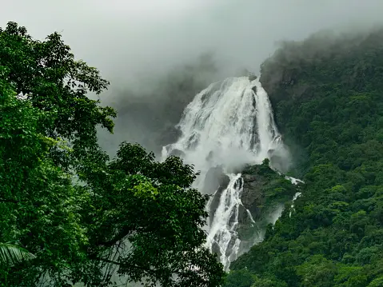
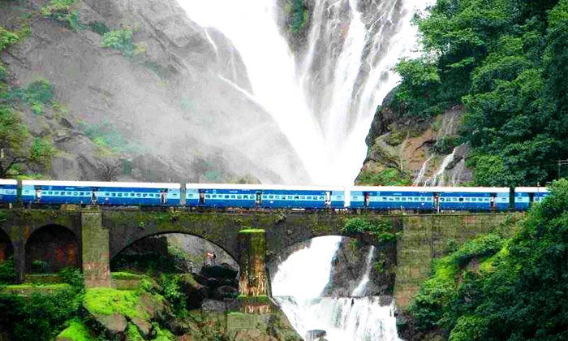

Dudhsagar Falls, Goa
This magnificent four-tiered waterfall is situated on the Mandovi River, straddling the border between Goa and Karnataka. Standing tall at 310 meters with an average width of 100 feet, it ranks among the tallest waterfalls in India. True to its name, this waterfall resembles a sea of milk, offering a breathtaking spectacle. It’s no surprise that it is considered one of India's premier natural wonders.


